Your smart VPN assistant
Your home network as an app.
Smart home, NAS, Shelly, cameras – one tap away. Direct at home, through your own tunnel when away.
- Free
- No account with us
- No ads, no tracking
- Open source (Apache-2.0)
- Android 8+
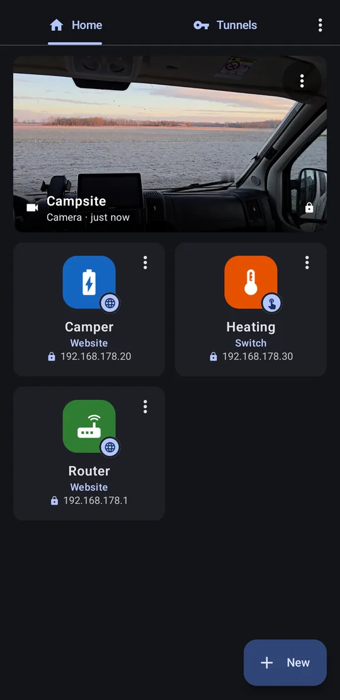
The idea
VPN only where you need it
A phone-wide VPN
- all traffic goes through your home
- disturbs Android Auto, navigation, banking
- blocks your other VPN – switched by hand
HomeHyrax
- tunnel only inside the app, only for your devices
- everything else stays normal
- switches on and off by itself
Automatic
The tunnel switches itself
You just tap the icon.
Several tunnels at once
Home, camper, office
Every entry knows its tunnel – HomeHyrax picks the right one.
- WireGuard – e.g. FRITZ!Box, OpenWrt, OPNsense, UniFi
- Tailscale / Headscale – without a public IP (DS-Lite, LTE)
Three kinds of entries
Websites, switches, cameras
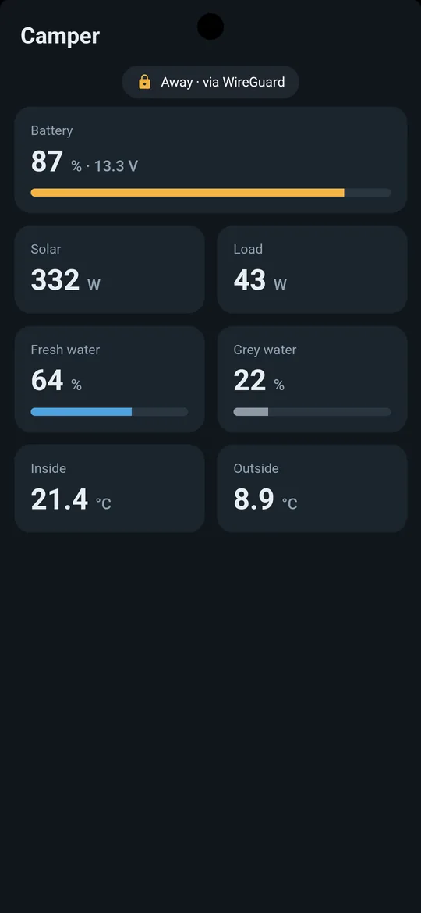
Any web interface as an app
- Full screen with its own home-screen icon
- Badge shows Home · direct or Away · via WireGuard
- Live values stay live, pull down to reload
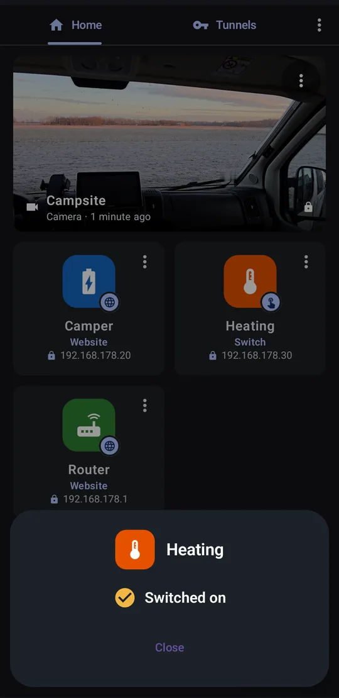
One tap – garage door, heating
- Shelly Gen1–Gen3: pulse, on, off, toggle
- Shows the real state: Switched on
- Fingerprint before switching
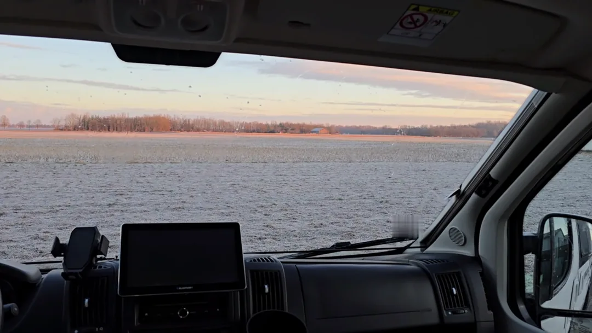
Live view via RTSP
- e.g. Eufy – without the manufacturer's cloud
- Fresh picture in the tile on every start
In the Play Store
At a glance
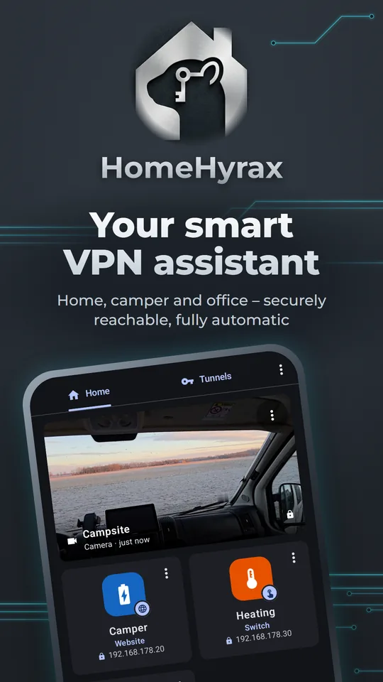
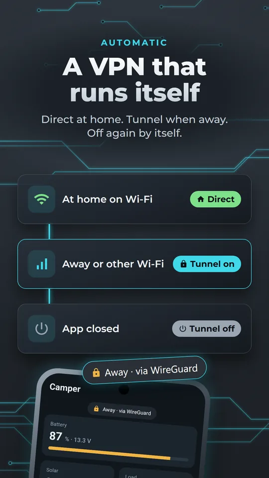
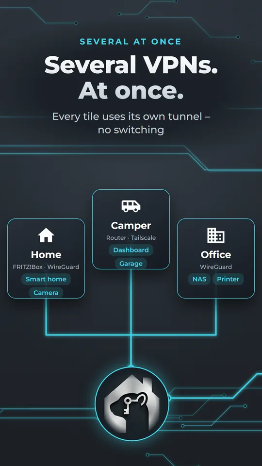
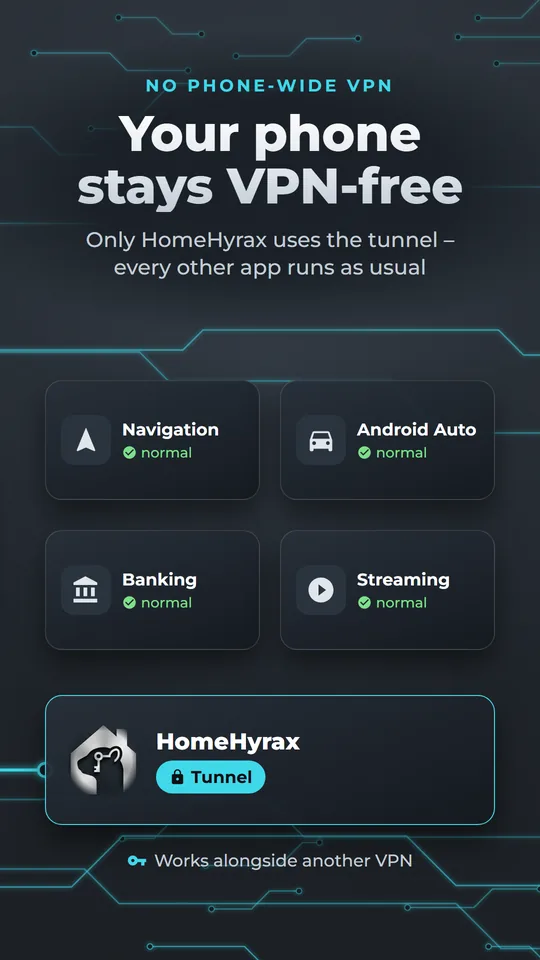
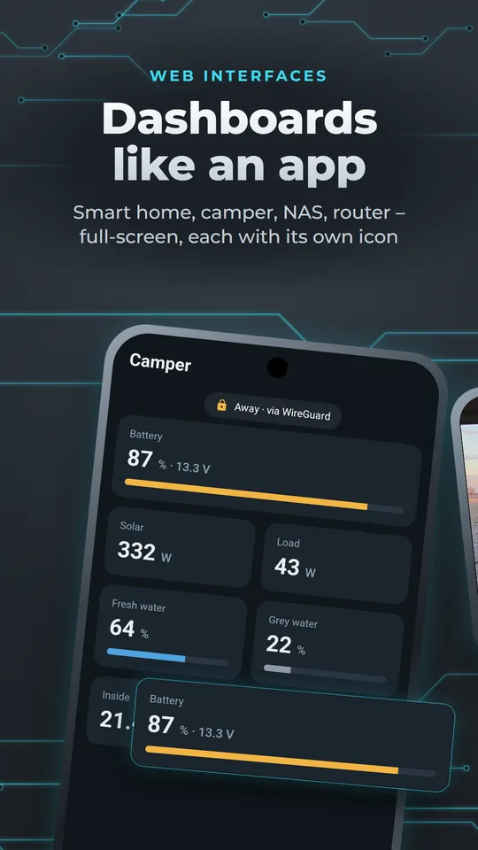
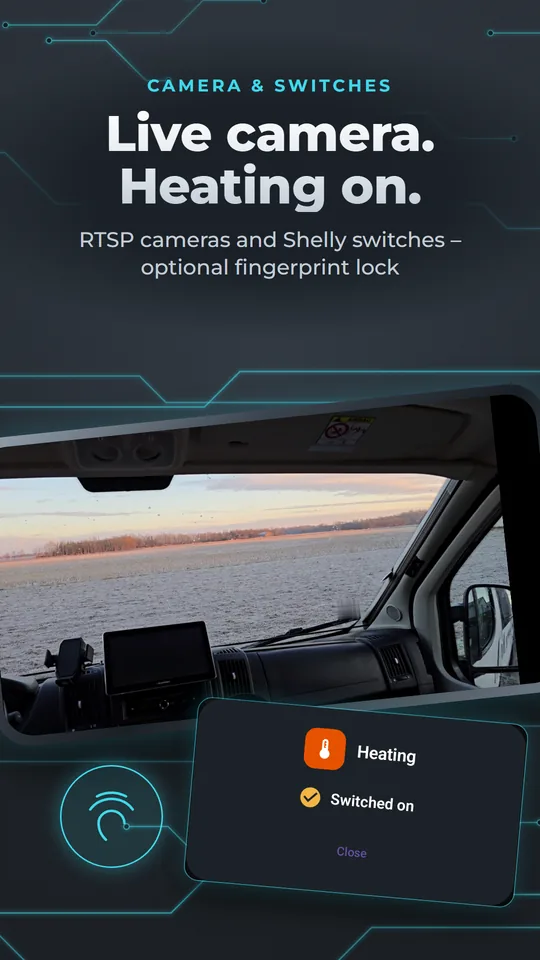
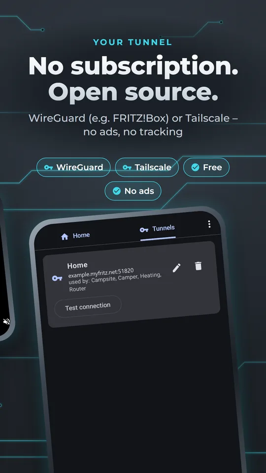
Setup
Ready in three steps
Add a tunnel
+ Tunnel → scan the FRITZ!Box QR code or sign in with Tailscale.
Add an entry
+ New → address, VPN Smart, done.
Detailed guide
WireGuard or Tailscale?
WireGuard
Fastest and most private- Phone connects directly to your router, nobody in between
- Needs a connection reachable from outside: own public IPv4 (classic DSL/fiber) or IPv6
- Built into the FRITZ!Box from FRITZ!OS 7.50
Tailscale / Headscale
When the router isn't reachable from outside- For DS-Lite, CGNAT, many cable/fiber lines, LTE/5G routers – e.g. in the camper
- No port forwarding: both sides connect outward
- Needs a device at home as subnet router (Raspberry Pi, NAS …)
- Sign-in via Tailscale (free for personal use) or your own Headscale server
Not sure? If your FRITZ!Box shows an IPv4 address under Internet → Online Monitor that does not start with 100.64–100.127, and the overview does not say “DS-Lite”, WireGuard will usually work. Otherwise take Tailscale.
WireGuard with a FRITZ!Box
From FRITZ!OS 7.50. Other routers: see below.
- Open
http://fritz.boxin a browser and log in. - Go to Internet → Permit Access → VPN (WireGuard) → Add connection.
- Choose Connect a single device, name it e.g. “HomeHyrax phone”, continue.
- Confirm on the FRITZ!Box when asked (button on the box or phone).
- A QR code appears – keep the page open.
- In HomeHyrax: Tunnels → + Tunnel → Scan QR code. Alternatives: take a screenshot and choose QR code from image (screenshot), load the file via Choose file (.conf), or … or paste configuration.
- Save. With Test connection you see right away whether the FRITZ!Box answers (on your home Wi-Fi the test may fail – that's normal).
One connection per phone. Two phones with the same key disturb each other as soon as both are away at the same time. Create a second connection in the FRITZ!Box for the second phone.
- The FRITZ!Box uses its MyFRITZ! address (
…myfritz.net). HomeHyrax resolves it on every connect – a changing IP is no problem. - The FRITZ!Box puts
0.0.0.0/0(everything through the tunnel) into the configuration. HomeHyrax ignores this on purpose: only the addresses of your tiles use the tunnel.
WireGuard with other routers
HomeHyrax reads the standard WireGuard configuration (wg-quick format). Any router or server that creates such a file or QR code for a device (“peer”, “client”) works.
| Device | Where |
|---|---|
| OpenWrt | Package luci-proto-wireguard, Network → Interfaces → WireGuard, add peer, “Generate configuration” |
| OPNsense / pfSense | VPN → WireGuard, create instance + peer, export the client configuration |
| UniFi gateway | Settings → VPN → VPN Server → WireGuard, add client, download file |
| Synology Router, ASUS, GL.iNet … | VPN server → WireGuard → create client/profile, file or QR code |
| Linux / Raspberry Pi | Your own WireGuard server, e.g. with PiVPN (pivpn add, pivpn -qr) |
The configuration for the phone looks like this (example values):
[Interface]
PrivateKey = <key of the phone>
Address = 192.168.178.201/24
[Peer]
PublicKey = <key of the router>
AllowedIPs = 192.168.178.0/24 # your home network
Endpoint = myhome.example.net:51820
PersistentKeepalive = 25AllowedIPs matters: it must contain your home network. HomeHyrax only sends addresses in this range through the tunnel. The UDP port (here 51820) must be reachable from outside – most routers open it themselves when you set up the WireGuard server.
Tailscale
Tailscale runs inside HomeHyrax – you don't need the Tailscale app or a VPN switched on. You need a free account at tailscale.com (or your own Headscale server) and a device that runs permanently at home and can run Tailscale: Raspberry Pi, NAS (Synology, QNAP, Unraid), Linux PC, some routers (GL.iNet, OpenWrt). It becomes the subnet router and forwards the app's requests to the other devices.
a) Set up the subnet router (example network 192.168.178.0/24 – use yours)
Raspberry Pi / Linux
curl -fsSL https://tailscale.com/install.sh | sh
# allow forwarding (once)
echo 'net.ipv4.ip_forward = 1' | sudo tee /etc/sysctl.d/99-tailscale.conf
sudo sysctl -p /etc/sysctl.d/99-tailscale.conf
# sign in and share the home network
sudo tailscale up --advertise-routes=192.168.178.0/24The last command shows a link – open it and sign in with your Tailscale account.
Synology NAS (DSM 7): Package Center → install Tailscale, open, sign in. Then via SSH: sudo tailscale set --advertise-routes=192.168.178.0/24
Other devices: install Tailscale and enable “Subnet router” / --advertise-routes with your home network.
b) Approve the route
- Open login.tailscale.com/admin/machines.
- At the subnet router: ⋯ → Edit route settings and tick the route.
- Recommended: same device ⋯ → Disable key expiry, so the router doesn't need a new sign-in after a few months.
c) Connect HomeHyrax
- Tunnels → + Tunnel → Tailscale. Leave Own server (Headscale) empty for Tailscale.
- Tap Connect. The browser opens the Tailscale sign-in – use the same account as for the subnet router, then return to the app.
- The card shows Connected and the shared home network. No home network yet? Step b) is missing.
With an auth key (Tailscale admin → Settings → Keys) you can skip the browser sign-in, e.g. for a family phone. When sharing via QR code, HomeHyrax never passes the auth key on.
Camper with an LTE/5G router
Mobile routers are almost never reachable from outside – take Tailscale.
- Larger Teltonika models (RUTX, RUTM, TRB1/TRB5) offer Tailscale as a package (System → Package Manager, then Services → VPN → Tailscale; see Teltonika wiki “Tailscale Configuration Example”).
- Small models like the RUT200 don't have enough memory: connect a Raspberry Pi Zero 2 W by Wi-Fi or LAN and set it up as subnet router as above.
- Give the camper its own address range (e.g.
192.168.50.0/24), different from home – otherwise the same addresses get mixed up.
Add a website
- Home → + New → Website.
- Name and Home network address: IP or name, optional port – e.g.
192.168.178.1,192.168.178.20:8123orhttps://nas.local:5001. - VPN: Smart and choose the tunnel.
- Tap the icon preview to Choose icon (icons + color) or take an Image from phone.
- Optional: Require unlock (fingerprint/face/PIN). Under Advanced: Full screen, Keep screen on, Desktop site.
- Save or straight Add to home screen.
Long-press a tile and drag it to reorder. Routers and NAS often use a self-signed certificate: HomeHyrax asks once and then remembers exactly this certificate.
VPN per entry: None / Smart / Always
Add a switch (Shelly)
- + New → Switch → device Shelly.
- On your home Wi-Fi: Find Shelly on home network – HomeHyrax lists all Shellys with name, generation and whether a password is set. Away or not found: Set up manually with the Shelly IP and generation.
- Choose the Channel (0 = first output) and the Action: Pulse – e.g. garage door (briefly on, then off automatically, duration in seconds), Turn on, Turn off or Toggle.
- If the Shelly has a password: enter it – it's stored encrypted and only sent when the Shelly asks (Gen1 Basic, Gen2 Digest SHA-256).
- VPN Smart, choose the tunnel, save.
Tapping the tile asks for your fingerprint (can be switched off), sends the command and shows the real state: Switched on / Switched off. With a pulse, it checks again afterwards and warns if the relay is still on. Other devices: Custom URL – HomeHyrax calls exactly this address.
Add a camera (RTSP)
- In the camera's app, enable the local RTSP stream and copy the link. Eufy: Settings → NAS (RTSP), recording set to “always” – with “on motion” the camera answers “stream not found”.
- HomeHyrax: + New → Camera → paste the link under RTSP address. User and password are split off automatically into Camera user / Camera password.
- VPN Smart, choose the tunnel, save.
Battery cameras without a base station (e.g. Reolink Argus, many eufyCams) usually offer no local stream. Cloud-only cameras are not supported.
How HomeHyrax knows whether you're home
- Mobile data → tunnel right away.
- On Wi-Fi the app briefly knocks on the address directly (max. 0.8 s). Answer → you're home, the page loads directly and the app remembers this Wi-Fi.
- Other Wi-Fi (hotel, office) → tunnel right away without knocking. If the tunnel fails there, it tries the direct route after all (e.g. new router at home).
- Loading directly fails → it switches to the tunnel by itself.
- The Wi-Fi is recognized by address range, router address and domain – not by its name, so HomeHyrax needs no location permission.
Tip: a foreign Wi-Fi with the same default network as yours (e.g. another FRITZ!Box with 192.168.178.x) where something happens to answer at the target address is taken for home. Remedy: use your own address range at home (e.g. 10.20.30.0/24) or set the entry to VPN Always.
Help
First step: “Test connection”
On the tunnel card tap Test connection. For Tailscale it shows per entry whether the address is in a shared network, which device carries it (direct or via relay), whether it answers and whether the target can be reached. Details shows the Tailscale log with Copy log.
WireGuard problems
| Message / behavior | Cause and fix |
|---|---|
| “No reply from the home network” | Router not reachable from outside: DS-Lite/CGNAT → Tailscale. Otherwise check port forwarding and Endpoint. |
| Home network address not found | DynDNS/MyFRITZ! address wrong or not active. |
| Tunnel up, page doesn't load | Address not in AllowedIPs – add your home network. |
| Works with one phone, not with two | Same key on both – one connection per phone. |
Tailscale problems
| Result | Cause and fix |
|---|---|
| Not in any shared network | Route not advertised or not approved in the admin console. |
| Router offline | Subnet router off or key expired – disable key expiry. |
| Tunnel OK, connection failed | Router doesn't forward: enable IP forwarding, check firewall, update Tailscale. |
| Sign-in hangs | Different account than the subnet router – use the same one. |
Via a Tailscale relay (DERP) it is slower, but works and stays end-to-end encrypted.
Still stuck?
Parts of a page missing? Those addresses must be in the tunnel too. After a crash, HomeHyrax shows a report with Copy – nothing is uploaded. Write to info@camperflower.de or open an issue on GitHub.
Security & privacy
Your keys stay on your phone
Encrypted
Keys and passwords AES-GCM with Android Keystore.
Nothing uploaded
No account, no logs, no ads, no tracking.
Locked down
Local proxy with a new password on every start.
Open source · Apache-2.0
Under the hood
A Go core (wireguard-go, gVisor, Tailscale tsnet) inside the app – without Android's VpnService.
Build it yourself
git clone https://github.com/matthiasharzheim/homehyrax
cd homehyrax
export ANDROID_HOME=/path/to/sdk
export ANDROID_NDK_HOME=$ANDROID_HOME/ndk/28.2.13676358
./build-go.sh # Go tests + gomobile → AAR
./gradlew lintRelease assembleReleaseThe Go tests run against a real second WireGuard peer and a Tailscale test server in-process.
FAQ
What does it cost?
Nothing. No subscription, no ads. Tailscale is free for personal use.
Do I need an account?
Not with us. WireGuard needs none at all; Tailscale uses your Tailscale account or your own Headscale.
Can I keep my other VPN?
Yes. HomeHyrax doesn't use Android's VPN slot.
Does it drain the battery?
No. The tunnel only exists while an entry is open and is gone 90 s after closing.
iPhone?
Not at the moment – Android 8.0 and later.
Why “HomeHyrax”?
The hyrax lives in rock crevices and slips through narrow gaps – like the tunnel into your home network.